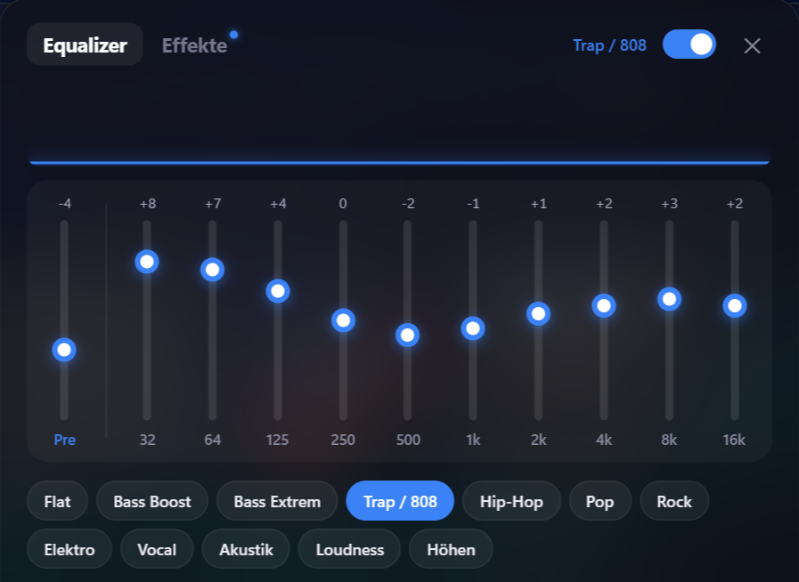
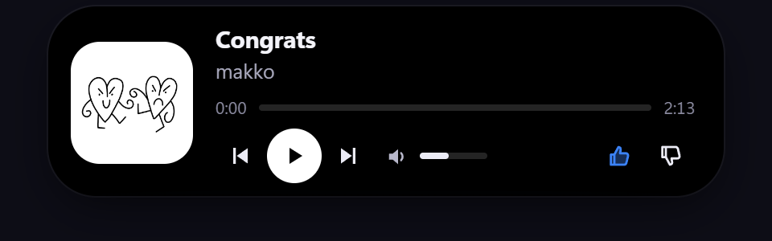
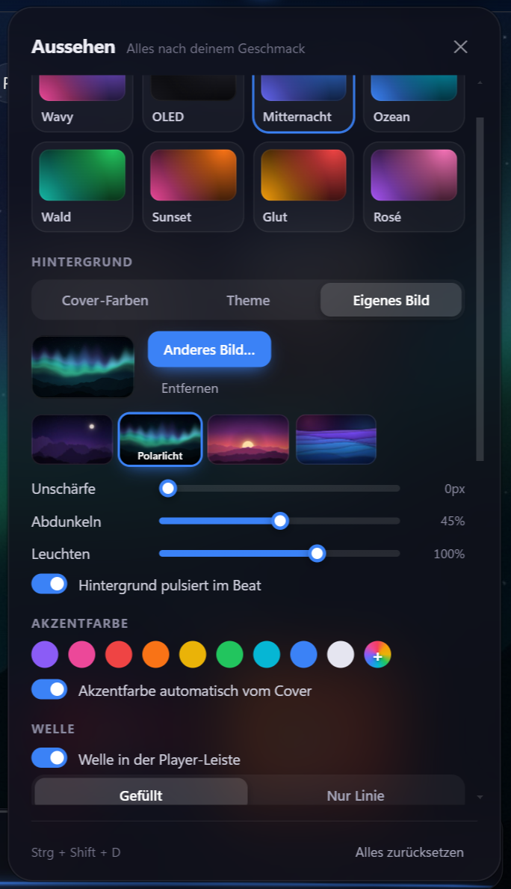

10-Band-Equalizer
Voreinstellungen, eigene Profile und ein eigener EQ für Kopfhörer und Lautsprecher, der automatisch wechselt.
Wavy ist ein YouTube-Music-Player für Windows, Mac und Linux – mit 10-Band-Equalizer, Karaoke-Songtexten Wort für Wort, Live-Wallpaper, Dynamic Island, Discord-Status und „Zusammen hören“. Auch für Android und iPhone.


Du meldest dich mit deinem normalen YouTube-/Google-Konto an. Alles andere passiert lokal auf deinem Gerät – und jedes Extra lässt sich ein- und ausschalten.
Voreinstellungen, eigene Profile und ein eigener EQ für Kopfhörer und Lautsprecher, der automatisch wechselt.
Synchrone Songtexte im Vollbild, Wort für Wort hervorgehoben – oder als Overlay über Spielen und anderen Apps.
Ein kleiner Player oben am Bildschirm mit Cover, Steuerung und Lautstärke.
Welle, Balken oder Partikel bewegen sich zur Musik hinter deinen Desktop-Symbolen, auf Wunsch mit der aktuellen Songtext-Zeile.
Sieh, was deine Freunde hören, schick Songs und teil einen Raum-Code, damit alle synchron dasselbe hören.
Designs, Akzentfarbe aus dem Albumcover, Hintergründe in Cover-Farben und eine leuchtende Welle, die im Takt pulsiert.
Bass-Boost, Hall, 8D, Slowed + Reverb, Nightcore und Lautstärke-Angleich.
Zeigt deinen aktuellen Song als Discord-Status und scrobbelt zu Last.fm.
Deine Beleuchtung folgt der Musik: OpenRGB (Corsair, ASUS, MSI …), Razer Chroma, WLED, Hue und Govee.
Wavy nimmt seine Farben vom Song, der gerade läuft. Wähl ein Design, eine Akzentfarbe oder ein eigenes Hintergrundbild – Player-Leiste, Welle und Menüs passen sich an.

Zehn Bänder von 32 Hz bis 16 kHz, Vorverstärker und Voreinstellungen von Bass Boost bis Stimme. Speichere eigene Profile und lass Wavy selbst zwischen Kopfhörer und Lautsprecher wechseln.
Die Dynamic Island zeigt den aktuellen Song oben am Bildschirm und klappt auf, wenn du mit der Maus drüberfährst. Abspielen, überspringen, liken und Lautstärke ändern, ohne die App zu öffnen.
Kostenlos für jede Plattform. Unter Windows, Mac (DMG) und Linux (AppImage) aktualisiert sich Wavy selbst.
Windows meldet „Der Computer wurde durch Windows geschützt“? Wavy ist noch nicht mit einem kostenpflichtigen Zertifikat signiert. Klick auf Weitere Informationen → Trotzdem ausführen.
HerunterladenDMG öffnen und Wavy in „Programme“ ziehen. Erster Start auf dem Mac
HerunterladenMit SideStore installieren – die App erneuert sich im Hintergrund selbst.
HerunterladenVersion · Alle Downloads
Wavy ist nicht von Apple beglaubigt (das kostet 99 $ im Jahr). Beim ersten Start meldet macOS deshalb „Wavy ist beschädigt und kann nicht geöffnet werden“. Die App ist in Ordnung – das dauert 30 Sekunden:
xattr -cr /Applications/Wavy.app && codesign --force --deep --sign - /Applications/Wavy.appDer Befehl entfernt die Download-Sperre, die macOS auf nicht bei Apple registrierte Apps legt, und signiert Wavy lokal auf deinem Mac.
Ja. Wavy ist auf jeder Plattform kostenlos, ohne Werbung von Wavy und ohne Abo. Du meldest dich mit deinem normalen YouTube-/Google-Konto an.
Nein. Wavy ist ein inoffizielles Fan-Projekt und gehört nicht zu YouTube oder Google. Es zeigt die normale YouTube-Music-Webseite in einem eigenen Fenster und ergänzt Funktionen.
Windows 10 und 11, macOS (Apple Silicon und Intel), Linux (AppImage, .deb, .rpm, .tar.gz), Android ab Version 8 und iPhone über SideStore.
Nein. Es gibt kein Tracking und keine Werbe-IDs. Einstellungen, Statistik und Verlauf bleiben auf deinem Gerät. Wavy verbindet sich nur mit YouTube Music und mit Diensten, die du selbst einschaltest, etwa Songtexte, Last.fm, Discord oder Freunde.
Wavy ist nicht mit einem kostenpflichtigen Zertifikat signiert (Windows) und nicht von Apple beglaubigt (Mac). Unter Windows auf „Weitere Informationen → Trotzdem ausführen“ klicken, auf dem Mac der kurzen Anleitung oben folgen. Jede Version wird außerdem bei VirusTotal geprüft – die Ergebnisse stehen auf der Release-Seite.
Wavy sucht beim Start und alle paar Stunden nach einer neuen Version. Klick auf „Jetzt aktualisieren“, Wavy startet neu und deine Einstellungen bleiben genau so, wie sie sind.
Deutsch und Englisch. Wavy richtet sich nach deiner Systemsprache, umstellen kannst du sie in den Einstellungen.
Fragen, Fehler, Ideen oder einfach dein Setup zeigen – neue Versionen werden im Discord automatisch angekündigt. Deutsch und Englisch sind beide willkommen.
Zum Discord